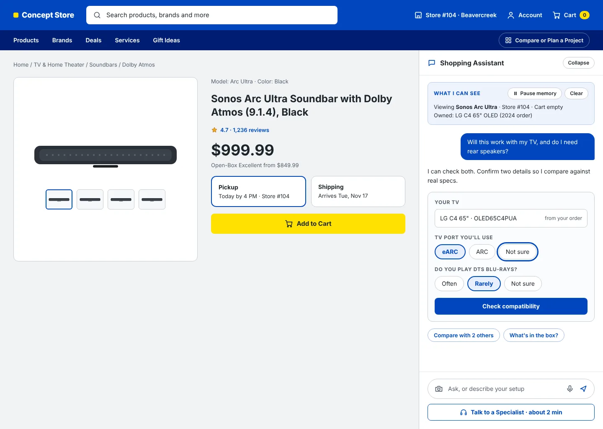
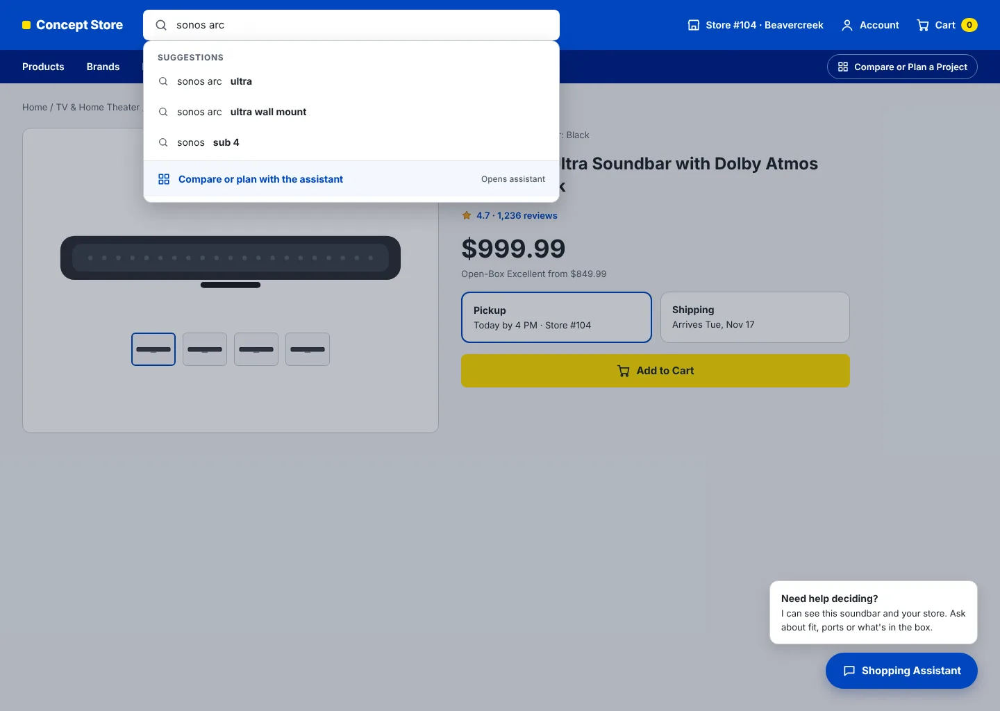
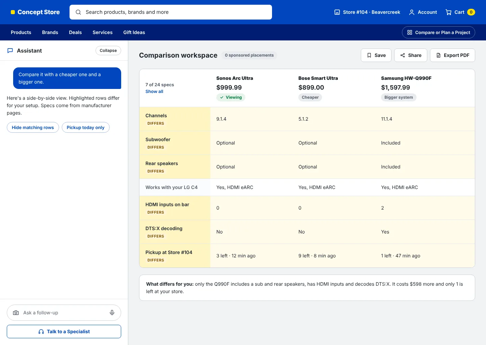
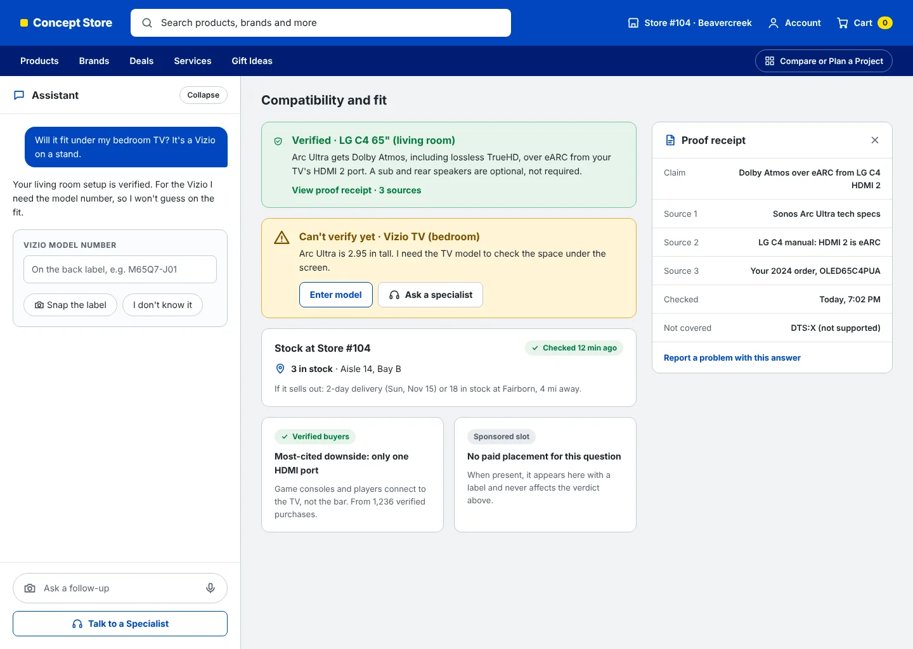
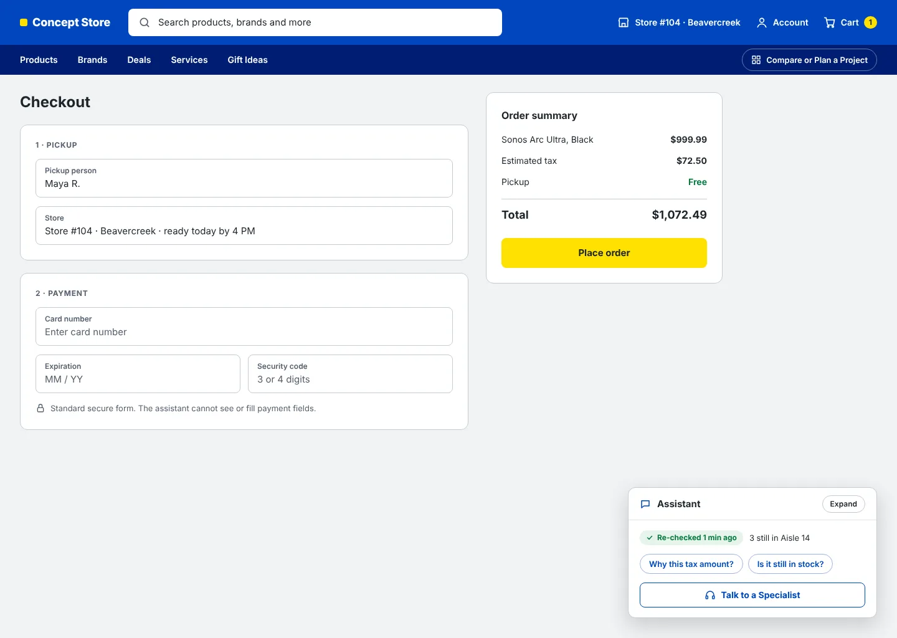
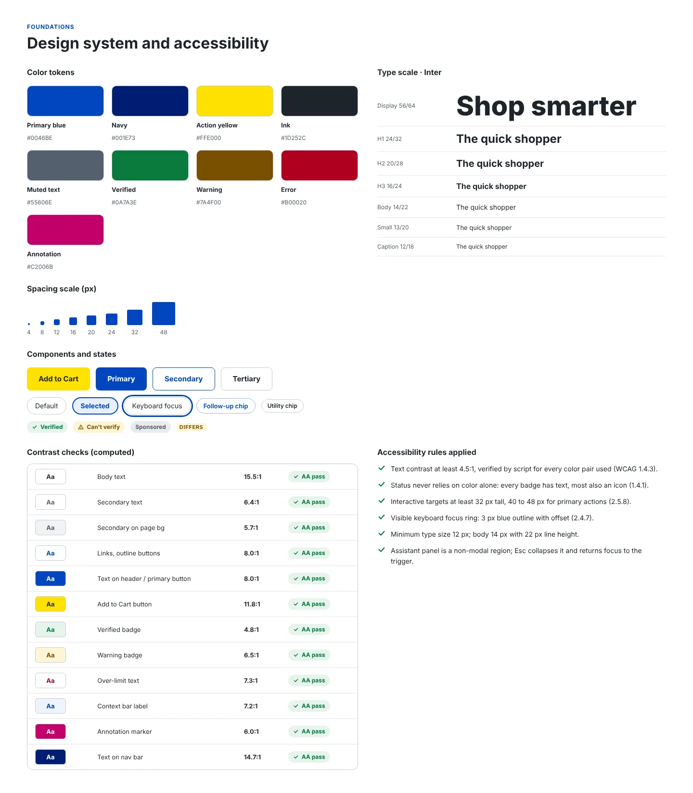
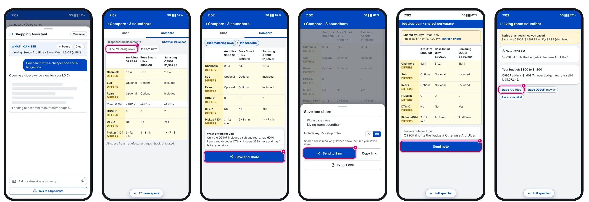

Make priority visible
One clear first action per screen, set by size, color role and position, so the squint test still shows it.
AI shopping assistant · Visual design · Case study 01
A retail AI assistant designed inside Best Buy's own page patterns, where visual hierarchy makes the purchase action, the proof and the uncertainty readable in one look.

A verified fact and a guess looked exactly the same
Retailers have moved their AI assistants into the shopping journey, but most still answer inside a narrow chat bubble. Nielsen Norman Group's 2025 to 2026 studies of live retail bots found shoppers missing the entry point, getting pulled from search into chat, losing the assistant at checkout and retyping follow-ups that were shown as plain text.
Shoppers feel the cost. In a 2026 industry synthesis by FutureFox, 54% of recent AI shoppers said they double-check everything the tools tell them and 62% said it wasted their time. Nearly half of US shoppers who bought on an AI recommendation returned the item (Blue Yonder, 2026), and 75% would shop less after a bad AI pick (Synchrony and Oxford Economics). The visual problem underneath: nothing on screen separates a verified fact from a guess.
Designed five assistant modules inside Best Buy's existing page patterns, set the visual hierarchy with one type scale, one spacing scale and strict color roles, documented them as a small design system with computed contrast, and prototyped six end-to-end tasks on web, tablet and mobile.
One clear first action per screen, set by size, color role and position, so the squint test still shows it.
Verified, can't-verify and stock freshness each get a distinct, consistent visual state with words, not color alone.
Extend Best Buy's page patterns with a few documented components instead of inventing a new look.
Desk research only: Nielsen Norman Group's 2025 to 2026 usability studies of retail and consumer bots (Amazon, Home Depot, Williams Sonoma, Redfin), Baymard Institute's comparison and checkout research, HCI studies comparing chat and graphical interfaces, and 2026 shopper surveys (FutureFox, Gartner, Blue Yonder, Synchrony). Then a visual audit of how chat assistants show certainty, priority and next steps.
How this project moved from the mess to a decision. Each stage lists only what was actually done.
Desk research only: Nielsen Norman Group's 2025 to 2026 usability studies of retail and consumer bots (Amazon, Home Depot, Williams Sonoma, Redfin), Baymard Institute's comparison and checkout research, HCI studies comparing chat and graphical interfaces, and 2026 shopper surveys (FutureFox, Gartner, Blue Yonder, Synchrony). Then a visual audit of how chat assistants show certainty, priority and next steps.
The same question, two ways to show the answer
A chat bubble
Shopper double-checks everything
The redesign
One clear first action per screen
Chat flattens hierarchy
Every chat answer looks the same, so the shopper has to read everything to find what matters. The fix was visual before it was technical: give priority and certainty their own consistent look.Patterns reported by NN/g and Baymard, 2025 to 2026
Built on web, tablet and mobile
Text was packed into cards with no breathing room, some type ran under 12 px, a placeholder logo made it look unfinished, and the products were fictional. I rebuilt every key screen on one type scale (12 to 56 px) and one spacing scale (4 to 48 px), checked every color pair by script, swapped in real product specs, and replaced the placeholder with a neutral wordmark.
Dropped
Arrows everywhere became noise. Scroll cues appear only where content really continues; next-tap rings are case-study annotations, shown in a different style.
Six key screens, each with one job
Five modules, one visual system
Search stays search. The assistant has its own labeled row and one bottom-right button, styled as secondary so it never outranks Add to Cart.
✓ Built, not tested

Search suggestions open the normal results grid; the assistant has its own labeled row, and one Shopping Assistant button sits bottom-right.
Only missing facts become pills and selectors, grouped under small uppercase labels with 16 px between groups. The TV is prefilled and labeled with its source.
✓ Built, not tested
The assistant panel shows what it can see, then pills for the TV port and Blu-ray question, with keyboard focus visible on Not sure.
The panel opens into a split view. Rows that differ are tinted and tagged Differs in text, and a count of sponsored placements sits beside the title.
✓ Built, not tested

Split view: chat on the left, a three-column spec table on the right with rows that differ tinted and labeled Differs.
Green and amber cards share one layout with an icon, a bold status line and the evidence. A proof receipt lists claim, sources, time checked and what isn't covered.
✓ Built, not tested

A green verified card, an amber can't-verify card with the missing fact, a stock card with minutes since check, and a proof receipt.
Yellow means buy, blue means assistant or secondary. Add-ons start unchecked, the all-in total is the biggest number, and the spending limit sits just above the button.
✓ Built, not tested

Review before adding: line items with checkboxes, an all-in total, a spending limit and one yellow Add 1 item to cart button; a specialist handoff card on the right.
The assistant docks at checkout to answer tax and stock questions. Payment is a standard form the assistant cannot see or fill.
✓ Built, not tested

Checkout with a fixed pickup and payment form, an order summary and the assistant docked bottom-right with re-checked stock.
The squint test: blur the screen and the order should still hold
Blurred, the review screen still reads in the intended order: the yellow Add to cart first, the blue Start chat second, then the card headings. In grayscale, the states still separate because each one carries words and an icon, not color alone.


One type scale: 56, 24, 20, 16, 14, 13 and 12 px. The all-in total and the page title are the largest text in their areas; nothing drops under 12 px.
Yellow is only for the purchase action. Blue is for the assistant, links and secondary actions. Green and amber are reserved for verified and can't-verify states.
One scale: 4, 8, 12, 16, 20, 24, 32, 48 px. 16 px inside a group, 24 to 32 px between groups, so related items read as one unit.
Status first, evidence second, action last. Every card starts with an icon and a bold line, and every review ends with one button.


The reasoning behind the screen: visual design, accessibility and the design system it was built on.
Nothing added yet is an amber badge with an icon and text, about 6.5:1 against its tint, so it still reads in grayscale.
Optional add-ons start empty. Each checkbox is 20 px with a 2 px border at 6.4:1, so the off state is clear.
All-in total is set at 18 px bold after a divider, so price is the last thing the eye settles on before deciding.
The spending limit sits directly above the button on a quiet gray strip, with the amount left in green.
The one yellow button on the screen is the purchase action, the same role yellow plays on Best Buy's pages.
Start chat uses the blue primary style; Call me and Find in store step down to outline and plain buttons.
The blue header, navigation and yellow purchase button follow Best Buy's established patterns. The new pieces (the context bar, verification badges, review card and proof receipt) are added as documented components with tokens and computed contrast.
A concept, reviewed but not tested
Every color pair was checked by script and every screen was reviewed against the posting's visual, interaction and system criteria. Nothing has been tested with shoppers yet.
Built: one yellow action per screen; the squint test still shows it first
Built: verified, can't-verify, conflict and stock-freshness states, each with words and an icon
Built: Best Buy page patterns kept; new components documented with tokens and contrast
Hierarchy is a set of rules, not a look. Once yellow meant buy and amber meant not verified, every new screen got easier to design and easier to read.
Ideas, not built.
10 to 15 shoppers on a real task, with me approving or editing each answer behind the scenes, to count how often the assistant would have been wrong.
Show each key screen for five seconds and ask what to do next, to check the hierarchy holds for people, not just under blur.
Questions or feedback on this case study? manche.siddhi@gmail.com
Next project
FindMe · Design system · StartupGrowing a design system while the product kept shipping